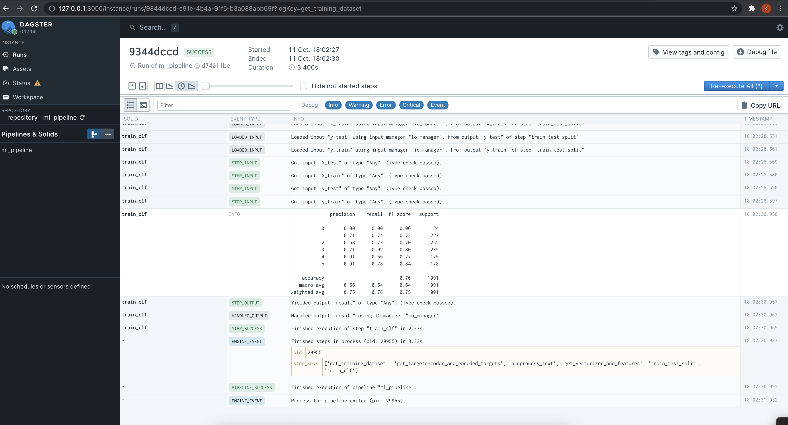

MLOps template - Part 2, Dagster pipeline
Here we will cover our small pipeline written in dagster.
Dagster is a data orchestrator for machine learning, analytics, and ETL
Dagster is a second generation data orchestrator that focues on being
data-driven rather than task-driven(like Airflow).
Solids and Pipelines #
Dagster's core abstractions are solids and pipelines.
Solids are individual units of computation that we wire together to form pipelines. By default, all solids in a pipeline > execute in the same process. In production environments, Dagster is usually configured so that each solid executes in its own process.
Dataset
Our pipeline will operate on Question Type Classification. This data helps to classify the given Questions into respective categories based on what type of answer it expects such as a numerical answer or a text description or a place or human name etc.
| Question | Category |
|---|---|
| How did serfdom develop in and then leave Russia ? | DESCRIPTION |
| What films featured the character Popeye Doyle ? | ENTITY |
| How can I find a list of celebrities ' real names ? | DESCRIPTION |
| What fowl grabs the spotlight after the Chinese Year of the Monkey ? | ENTITY |
| What is the full form of .com ? | ABBREVIATION |
| What contemptible scoundrel stole the cork from my lunch ? | HUMAN |
| What team did baseball 's St. Louis Browns become ? | HUMAN |
Category can take following values - HUMAN, ENTITY, DESCRIPTION, NUMERIC, LOCATION.
Solid #
A solid is a unit of computation in a data pipeline. Typically, you'll define solids by annotating ordinary Python functions with the @solid decorator.
Our first solid get_training_dataset
loads the data from csv and returns
texts (List[str])- Questiontarget (List[str])- Category
@solid(
output_defs=[
OutputDefinition(name="texts", is_required=True),
OutputDefinition(name="target", is_required=True),
]
)
def get_training_dataset(context):
texts, target = dataloaders.get_input_dataset(INPUT_DATASET_LOC)
context.log.info(f"Loaded data; N={len(texts)}, Targets={set(target)}")
yield Output(texts, "texts")
yield Output(target, "target")
OutputDefinition #
To define multiple outputs, or to use a different output name than "result", you can provide OutputDefinitions to the @solid decorator.
When you have more than one output, you must yield an instance of the Output class to disambiguate between outputs.
Let's look at another solid preprocess_text.
@solid
def preprocess_text(context, texts):
texts = text_preprocessing.preprocess_text(texts)
context.log.info(f"Text pre-processing done; N={len(texts)}")
return texts
Here, we are doing some text preprocessing. Since we are not returning
mulitple outputs here, we can avoid OutputDefinition.
Pipeline #
To execute our solid, we'll embed it in an equally simple pipeline. A pipeline is a set of solids arranged into a DAG of computation. You'll typically define pipelines by annotating ordinary Python functions with the @pipeline decorator.
Let's look at our Pipeline.
@pipeline
def ml_pipeline():
# 1. fetch training data
texts, target = get_training_dataset()
# 2. minimal text preprocessing
# 3. tfidf vectorization
vectorizer, X = get_vectorizer_and_features(preprocess_text(texts))
# 4. target encoding
target_encoder, encoded_target = get_targetencoder_and_encoded_targets(target)
# 5. train test split
X_train, X_test, y_train, y_test = train_test_split(X, encoded_target)
# 6. model training, validation, registry, artifact storage
train_clf(X_train, X_test, y_train, y_test)
Here we call few solids like get_training_dataset, preprocess_text,
get_vectorizer_and_features, etc.
These calls don't actually execute the solids. Within the bodies of functions decorated with @pipeline, we use function calls to indicate the dependency structure of the solids making up the pipeline.
Executing Our First Pipeline #
Dagit to visualize our pipeline in Dagit, from the directory in which we have saved the pipeline file.
$ dagit -f mlops/pipeline.py
# Loading repository... Serving on http://127.0.0.1:3000
We can head over to the browser and look at the pipeline.

To execute the pipeline from the UI, head over to the playground section and
click Launch Execution (at the bottom right).
If the pipeline executed successfully, you should see logs like this.

The pipeline we just executed registered our trained model using MLflow and
stored the model artifacts using minio.
We will look at those components in the next part.